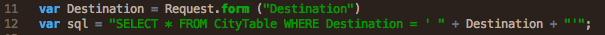

SQL Injection is a type of malicious attack that tries to exploit SQL queries in order to gain access or destabilize a database. Code is inserted is into strings and then injected into user input fields which translate them into variables that are concatenated by the SQL statement process and executed upon the database. In other words, a malicious user or bot sees the syntax and form of an SQL database as an exploitable open door that they gain control over, pry open, or shove destructive code into. One of the more common routes to employ SQL injections via form elements since they allow for user input elements that usually link to a database.
What the above code does is it sets a Request Object up, collects a user inputted destination via that object's form, and sets that input to the variable, Destination. It then inserts that variable into a premade SQL Query. If a user inputs a city, that city is inserted into a Query. Say the user inputs Berlin. The following query will run.
The above is a proper execution of code, but you can probably tell it is weak. It relies on an expectation that a user is going to play nice. What if the user enters in, "Berlin'; drop table CityTable--"? The following query runs:
The query takes the semicolon as sign of a statement ending and runs the subsequent code as new query. The double hyphen that ends the code tricks the query into thinking any code following it is merely a comment. The code is very blatantly malicious. It will drop the CityTable.
Because they tend to be among the more common ways to attack maliciously, many preventative measures have been developed to combat them. One of the most important things a developer should do is to make sure all user input is validated. This is also called input sanitization. A developer should make no assumptions about the size, type, or content of data that is received by an application. If you're asking for a five number digit, don't believe you'll never get a massive MPEG file. Test all data that is inputted. Reject data that contains escape sequences, binary data, and comment characters. Execute multiple layers of validation as well. It is important to keep the testing vigilant at every new entry point. Most importantly, never concatenate user input that hasn't been validated. Concatenation is usually the route of insertion into code. Test before it occurs!
Conceptually, this is something that shouldn't be too hard for a new programmer to understand. Sanitization can occur in many straightforward ways. For instance, you can have a whitelist of good inputs and a blacklist of bad ones. You would only allow inputs that match those from the whitelist or block those from the blacklist. Of course, this might create problems with functionality. There has to be a balance between good protection and optimal usability.
A concept that is a little more higher level but still within the realm of sanitization parameterized queries. Essentially, what this tactic seeks to do is shift any input into parameters before they are sent to the query. So when the query runs, only that single query is executed even if there is a malicious statement within the input. The malicious statement gets contained within the confines of the parameter boundary. The code becomes a little less open ended, preventing attacks that exploit any open-ended quality. This doesn't prevent every malicious injection, but it also doesn't require you to search for a million specifics and protect against them. It also helps guard against innocuous errors from resulting large amounts of damage.
Resources used: